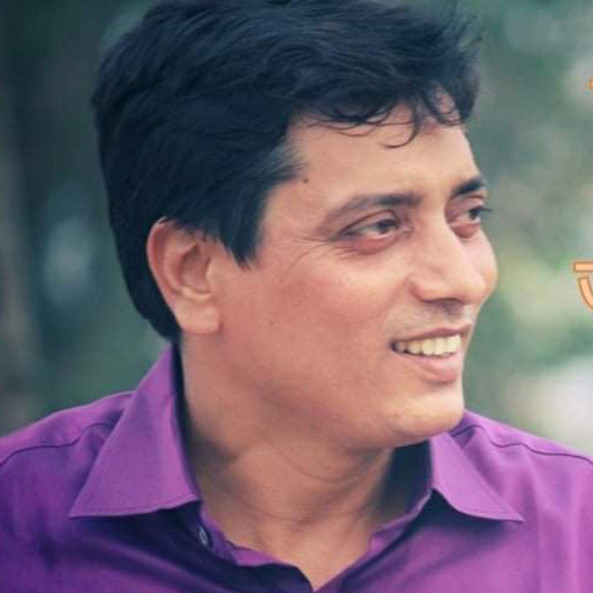
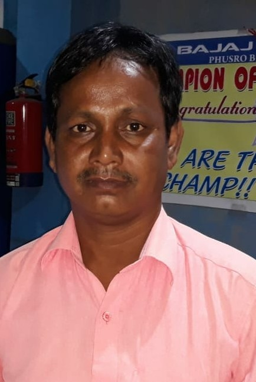

About Us
Currently, Satylok on-ground members are group of Some Teachers & Students who utilizes all the donation amount to help the needy people in Area around their residence.
Founder

Mr. Satyendra Narayan Rai
○ Living in Sawang, Bokaro, Jharkhand
○ Currently associated with D.A.V. Public School, Sawang as Physical Education Teacher
QUALIFICATIONS
○ Ph.D. Scholar (2019)
○ UGC N.E.T qualified sports enthusiast (2013)
○ M.P.Ed. From Pt. Ravi Shankar Shukla University, Chattisgarh (2010)
○ B.P.Ed. From Amravarti University Maharashtra (1999)
○ B.Com. (accounts Hons.) From VinobaBhave University (1997)
Executive Director & Coordinator

Mr. Manoj Kumar Mahto
Lives in Kathara, Jharkhand
(A Renowned social worker)
Executive members

Mantu Yadav
Shamim Qureshi
Rajendra Yadav
Vivek Kumar Jha
Mohammad Hasnain
Vijay Kumar Yadav
Niraj Gope
Kapil Deo Yadav
Adarsh Kumar
Rahul Aryan Tiwari
Abhinav Kumar
Ramiz Raza
Ravi Ranjan
Rahul Kumar Singh
People with us
○ Mr. Kishor Sir - Old Teacher (DAV Kathara) & many other professionals
○ Students from DAV Public School, Kathara
○ Students from DAV Public School, Sawang
○ Students from different schools & colleges of India
○ People who help the needy people
○ People who help the poors
People from every stream, class, age are welcome.
Who can join us?
You
Mantu Yadav
Shamim Qureshi
Rajendra Yadav
Vivek Kumar Jha
Mohammad Hasnain
Vijay Kumar Yadav
Niraj Gope
Kapil Deo Yadav
Adarsh Kumar
Rahul Aryan Tiwari
Abhinav Kumar
Ramiz Raza
Ravi Ranjan
Rahul Kumar Singh
○ Students from DAV Public School, Kathara
○ Students from DAV Public School, Sawang
○ Students from different schools & colleges of India
○ People who help the needy people
○ People who help the poors
People from every stream, class, age are welcome.
Who can join us?
You
Made With ❤️ In India